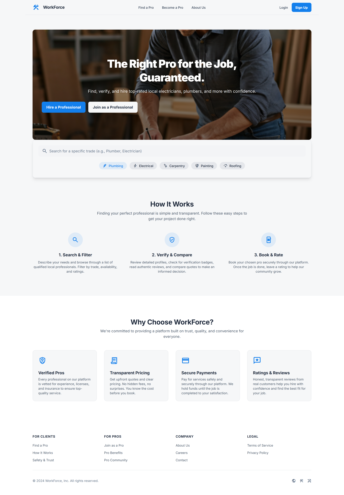
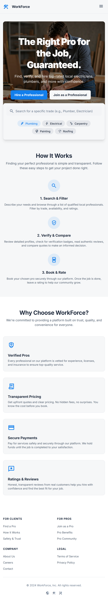

Site Plan Document
Site Name
Crafts.com
This name was selected because it clearly represents a platform centered on skilled manual workers (“craftsmen”) and allows users to quickly understand the purpose of the site: hiring reliable service professionals.
Optional domain availability: crafts.online
Site Purpose
The website exists to function as a streamlined hiring platform where users can locate, verify, and hire skilled manual labor professionals such as carpenters, electricians, painters, plumbers, and more. It provides profiles, ratings, authentication indicators, and an easy booking system to ensure trustworthy and efficient service connections.
Scenarios
- “Where can I find a verified electrician near me who is available this weekend?”
- “How do I confirm a craftsman’s previous work or customer reviews before hiring?”
Color Scheme
Primary Color: #1e293b - used for page headings and section titles.
Secondary Color: #475569 - used for body text and general content.
Accent Color: #137fec - used for highlighting important text or optional details.
Typography
Montserrat - used for headings and section titles for a clean, professional look.
Inter - used for body text, paragraphs, and list items to improve readability.
Wireframe
Larger View
Mobile View
